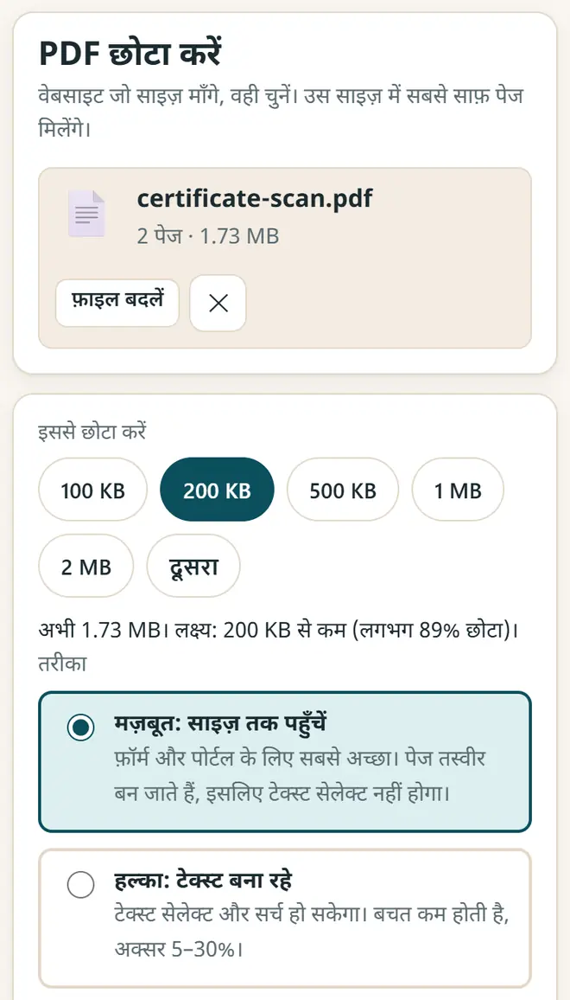
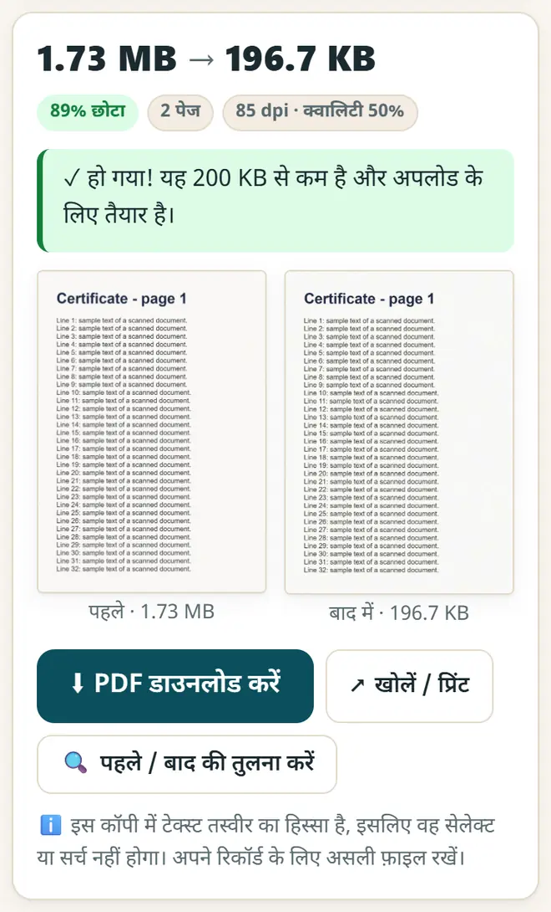

ऑनलाइन फ़ॉर्म के लिए PDF का साइज़ 100 KB या 200 KB कैसे करें
परीक्षा, नौकरी और स्कॉलरशिप के पोर्टल अक्सर कुछ KB बड़ी PDF भी नहीं लेते। फ़ॉर्म जितना साइज़ माँगे, PDF को ठीक उतना छोटा कैसे करें, फ़ोन या कंप्यूटर पर और कहीं अपलोड किए बिना, यहाँ देखिए।
छोटा जवाब
PDF कंप्रेस और JPG से PDF खोलें, अपनी PDF चुनें, फ़ॉर्म में माँगा गया साइज़ (100 KB, 200 KB, 500 KB…) दबाएँ, “मज़बूत: साइज़ तक पहुँचें” रहने दें और “PDF छोटा करें” दबाएँ। “पहले / बाद की तुलना करें” से पेज जाँचें, फिर डाउनलोड करें। पहले फ़ोटो से PDF बनानी हो तो “JPG से PDF” टैब इस्तेमाल करें।
5 स्टेप में PDF कंप्रेस करें
-
ऐप खोलें और अपनी PDF चुनें
PDF कंप्रेस और JPG से PDF खोलें। “PDF छोटा करें” टैब में “PDF चुनें” दबाएँ और अपनी फ़ाइल चुनें।
-
फ़ॉर्म में माँगा गया साइज़ चुनें
100 KB, 200 KB, 500 KB, 1 MB या 2 MB दबाएँ, या “दूसरा” में अपना साइज़ लिखें। ऐप बताता है कि फ़ाइल को कितना छोटा होना है।

फ़ॉर्म में माँगा गया साइज़ चुनें: 100 KB, 200 KB, 500 KB और भी। -
तरीक़ा चुनें
“मज़बूत: साइज़ तक पहुँचें” तय साइज़ तक पहुँचता है और फ़ॉर्म के लिए सबसे अच्छा है। “हल्का: टेक्स्ट बना रहे” में टेक्स्ट सेलेक्ट हो सकता है, पर बचत कम होती है। स्कैन किए पेजों के लिए ब्लैक एंड व्हाइट (ग्रेस्केल) पर टिक करें, फ़ाइल और छोटी हो जाएगी।
-
कंप्रेस करें और जाँचें
“PDF छोटा करें” दबाएँ। ऐप अलग-अलग सेटिंग आज़माकर वही सबसे साफ़ पेज रखता है जो साइज़ में फ़िट हों। “पहले / बाद की तुलना करें” से देख लें कि टेक्स्ट अब भी आसानी से पढ़ा जा रहा है।

हो गया: नई फ़ाइल सीमा से छोटी है, पहले / बाद की जाँच के साथ। -
डाउनलोड करें और फ़ॉर्म में अपलोड करें
“PDF डाउनलोड करें” दबाएँ। अपनी असली फ़ाइल भी संभालकर रखें: छोटी कॉपी सिर्फ़ अपलोड के लिए है।
फ़ॉर्म के लिए फ़ोटो और हस्ताक्षर
- “JPG से PDF” टैब में दस्तावेज़ों की फ़ोटो से एक PDF बनाएँ। यह ID कार्ड के आगे और पीछे का हिस्सा एक ही पेज पर भी लगा देता है।
- फ़ोटो या हस्ताक्षर ठीक पिक्सल और KB में चाहिए, जैसे 20–50 KB? फ़ॉर्म फ़ोटो और सिग्नेचर रीसाइज़र इस्तेमाल करें।
- WhatsApp या वेबसाइट के लिए कई फ़ोटो छोटी करनी हैं? इमेज कंप्रेसर और रीसाइज़र इस्तेमाल करें।
- अपनी परीक्षा या नौकरी की आधिकारिक सूचना में साइज़ के नियम ज़रूर पढ़ें: हर फ़ॉर्म की सीमा अलग होती है।
नए मुफ़्त टूल और हिंदी में AI के पाठ पाएँ
हमारी ईमेल लिस्ट से जुड़ें: नए मुफ़्त ऐप, नई गाइड और AI पर हिंदी वीडियो पाठ की जानकारी आपको मिलती रहेगी। कोई स्पैम नहीं।
सिर्फ़ वयस्कों (18+) के लिए। आप कभी भी नाम हटवा सकते हैं।
हम ये टूल क्यों सुझाते हैं
- सबके लिए मुफ़्त: न विज्ञापन, न साइन-अप, न कोई पेड प्लान।
- प्राइवेट: आपकी फ़ाइलें और जानकारी आपके अपने डिवाइस पर ही रहती हैं।
- फ़ोन, लैपटॉप या स्मार्टबोर्ड पर चलते हैं, और एक बार खुलने के बाद बिना इंटरनेट भी।
- हिंदी समेत 12 भाषाओं में।
वीडियो से सीखना पसंद है? हमारे YouTube चैनल पर AI और मुफ़्त टूल्स के हिंदी पाठ देखें।
अक्सर पूछे जाने वाले सवाल
PDF को 100 KB का कैसे करें?
PDF चुनें, 100 KB दबाएँ, “मज़बूत: साइज़ तक पहुँचें” रहने दें और “PDF छोटा करें” दबाएँ। अगर पेजों पर बहुत छोटे अक्षर हैं, तो 200 KB या ग्रेस्केल आज़माएँ, या PDF को हिस्सों में बाँटें।
क्या क्वालिटी ख़राब होगी?
मज़बूत कंप्रेशन पेजों को तस्वीर बना देता है, इसलिए टेक्स्ट सेलेक्ट नहीं होता, पर ऐप वही सबसे साफ़ क्वालिटी चुनता है जो साइज़ में आ जाए। अपलोड से पहले “पहले / बाद की तुलना करें” से जाँच लें।
क्या मेरा दस्तावेज़ कहीं अपलोड होता है?
नहीं। PDF आपके ब्राउज़र के अंदर ही बदली जाती है और आपके डिवाइस से बाहर नहीं जाती। इसलिए मार्कशीट, आधार और सर्टिफ़िकेट के लिए यह सुरक्षित है।
JPG फ़ोटो से PDF कैसे बनाएँ?
“JPG से PDF” टैब खोलें, फ़ोटो चुनें, क्रम और पेज का साइज़ तय करें, और “PDF बनाएँ” दबाएँ। आप साइज़ की सीमा भी रख सकते हैं, जैसे 200 KB से कम।
क्या यह मोबाइल पर चलता है?
हाँ, Android के Chrome में भी और iPhone के Safari में भी। PDF टूल लोड करने के लिए पहली बार इंटरनेट चाहिए, फिर यह ऑफ़लाइन चलता है।
काम की लगी?
इसे किसी दोस्त, साथियों या अपने स्कूल के WhatsApp ग्रुप में भेजें।